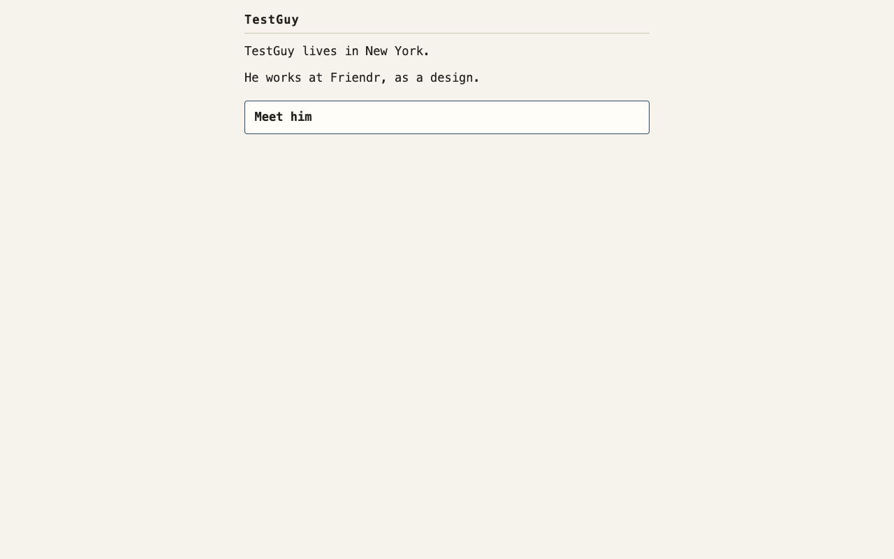
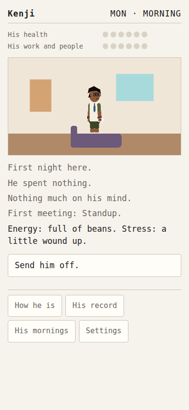
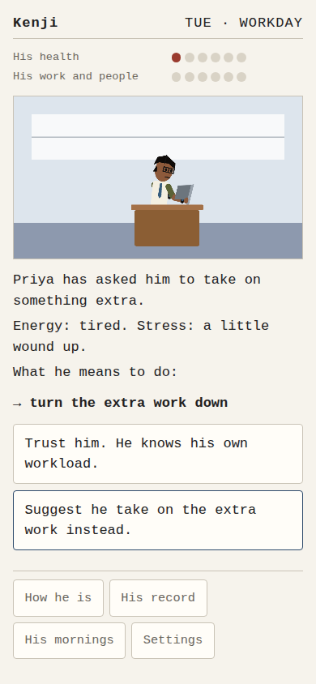
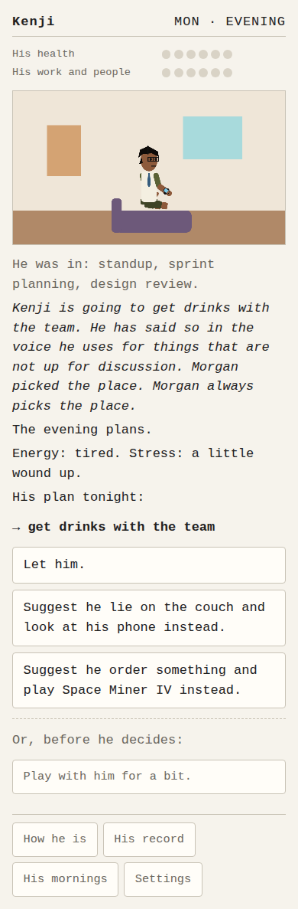
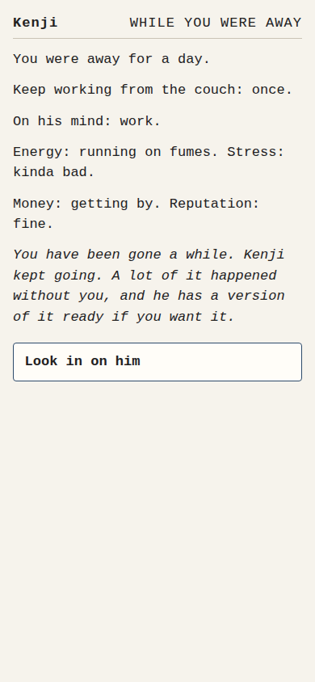
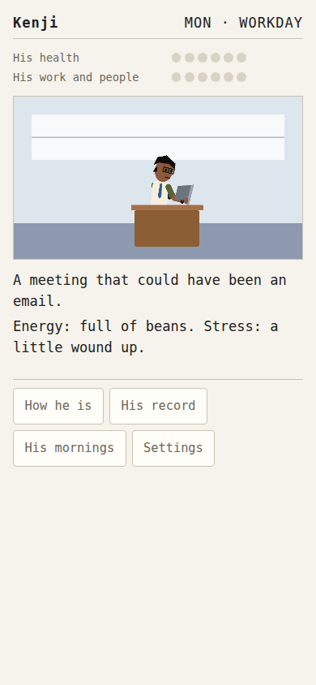

You don't play him. You influence him.
Adopt a little guy with an apartment, needs, money, relationships, and a ridiculous commute. His day mostly happens without you. He lives on your real clock — mornings at 06:00, the workday at 12:00, the evening at 18:00. Look in when you can. A week takes a week.
FREE TO PLAY — SAVES IN YOUR BROWSER
Observe → he forms an intention → you may intervene → time passes → you discover the consequences. Every feature in the game has to make one of those five better, or it gets cut. That's the only test.
You never push a button to make him do a thing. You see what he's going to do and you choose whether to get in the way. He has his own plans. The company layer throws shocks he didn't choose — layoff rounds, reorgs, CEO pivots — so two guys' lives feel different even with the same hand.
The engine decides every state change. Every change to his life is an appended event with provenance — a canonical log, not a scoreboard. Achievements, weeks in review, the good ending, the bad ending: all derived from that log afterwards. The LLM writes only his words, never his numbers.
Mornings, the workday, evenings — on your time zone, your time. Close the tab; he keeps going.
Nothing changes without being recorded. His whole career is a replayable, provable log.
Parts and palettes are generated from his seed. Tens of millions of distinct guys, no two the same.
He commutes to a ridiculous fictional company. Reorgs, layoffs, committee politics — the office is a world.
His apartment, street, and city react to his state. It isn't a backdrop.
A good ending, a departure, a burnout. Each comes out of the log, not a counter hitting zero.






The game runs a whole week end to end: seven days, three windows each, a daily digest, and the endings that fall out of it. He's saved in your browser, so come back in the same browser and he's still there. No account, no download.
Adopt him. Check in when you can. He's not going anywhere, but his week is.
Free to play. Save in your browser. Support if it means something to you.